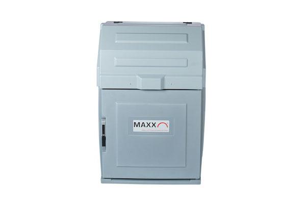
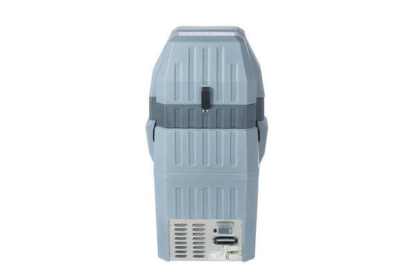
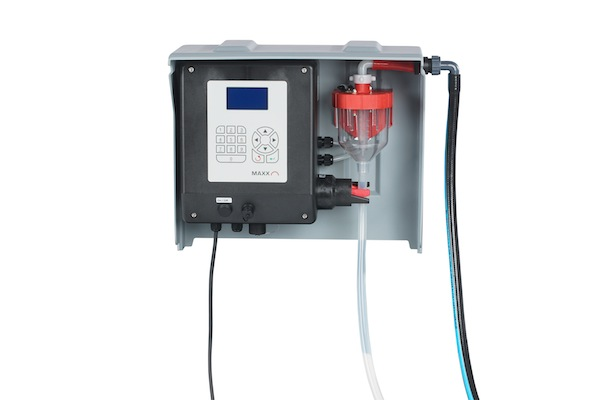
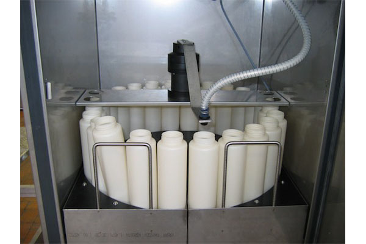

Maxx Meß- und Probenahmetechnik GmbH
Founded on 1st April 1997 by Eduard Seifer and Karl-Heinz Walz, Maxx was created by the former management of Bühler-Montec — the market leader in sampling technique. Today Maxx manufactures stationary and portable autosamplers, vacuum and peristaltic types, for wastewater, drinking water, safe areas, Ex zones, large-volume sampling, dosing systems, and distribution variants.
Vacuum & Peristaltic
Two proven sampling principles for diverse flow rates and media viscosities.
Stationary & Portable
Fixed installations for continuous monitoring or portable units for field sampling.
ATEX / Ex Zones
Zone 1 & Zone 2 certified units for safe operation in hazardous environments.
Large Volume & Dosing
Specialist systems for high-capacity sampling and precise chemical dosing.
Product Range


P6 Mini Maxx
Compact portable sampler combining flexibility with high sampling accuracy.
View Details

SP Zone 2
Certified for Zone 2 hazardous areas with robust peristaltic pump technology.
View Details
SP5 A
Versatile stationary sampler suitable for a wide range of industrial applications.
View Details

SP5 S
Compact stationary unit with flexible volume and time-proportional sampling modes.
View Details
TP5 C Active
Portable active sampler for time- and flow-proportional composite sample collection.
View Details
TP5 C Passive
Portable vacuum sampler ideal for remote locations with no external power supply.
View Details
TP5 W
Weather-resistant portable sampler for outdoor and harsh environmental conditions.
View Details

Dosing Systems
Precision dosing systems for accurate chemical addition in treatment processes.
View Details
Distribution Variants
Flexible distribution modules for multi-container and split sample configurations.
View Details